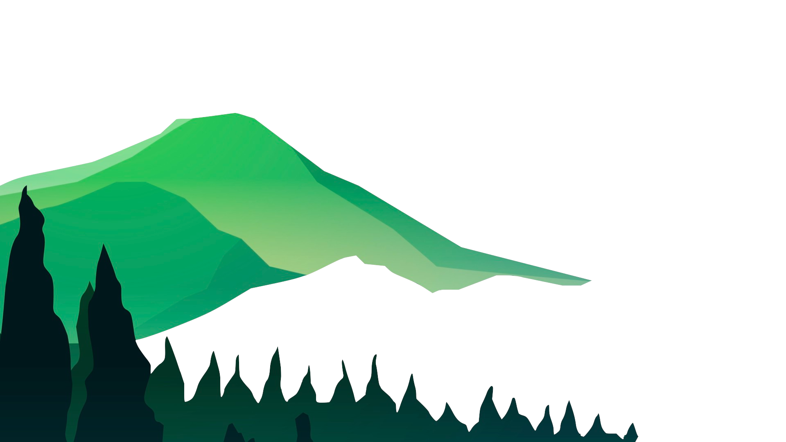

2 Page
Next 
Artificial Intelligence
인공지능과 윤리
>>> 인공지능의 발전과 더불어 제기되고 있는 것이 인공지능의 윤리 문제이다.
가령 인공지능 로봇 개발자에 의해 남녀차별이나 인종차별과 같은 편향된 알고리즘이 삽입된다면, 인공지능 로봇 역시도
이러한 편향된 생각을 가지게 될 것이다. 이러한 점에서 기술적인 연구뿐만이 아닌 윤리적인 측면에 대한 올바른 정립이 필요하다.
이에 세계 각국의 주요 기관에서는 2017년 아실로마 AIAsilomar AI Principles
라고 하는
23가지 원칙을 세워 인공지능을 인류에게 올바른 방향으로 발전시키기 위한 노력을 하고 있다. 또한 설명가능 인공지능eXplainable Artificial Intelligence
을
통해 인공지능의 동작 결과를 사람이 이해할 수 있도록 알고리즘 처리 과정을 명시할 것을 권유하는 등 인공지능 알고리즘에 대해서도 투명하게
관리하기 위한 노력을 기울이고 있다.
인공두뇌
>>> 인간의 두뇌작용은 크게 나누어서 지각과 지능이 있는데, 지각은 음성의 지각●도형의 지각●냄새의 지각 등,
지능은 논리상의 판단●공리●정리의 연역●귀납, 언어의 판단●번역, 학습●운동●경기●연기●연주 등이 있다. 인공두뇌로서 실현되고 있는 기능은,
이 중 극히 일부에 지나지 않으며 그 정도도 상당히 한정된 것이다. 예를 들면, 촬영기의 노출을 정하는 정도의 판단을 하는 기구를 인공두뇌라고 하는 예도 있다.
그러나 상당한 기계적인 논리판단이나 사무처리●수치계산 등에 대해서는 컴퓨터가 가장 유망하며, 한정된 종류의 작업에 관한 한, 인간에 비해 수천배나 속도가 빠르다는
이점을 가지고 있다. 이와 같은 두뇌작용을 하는 기계를 자동인간이라 하며, 기본적인 논리조작의 유한회수의 반복으로 실행 가능한 동작을 연구하는 이론이
여러 가지 전개되고 있다.
기계학습(Machine Learning)이란?
>>> 인공지능의 한 분야이다. 1959년 아서사무엘은 기계학습을 컴퓨터에 명시적인 프로그램 없이 배울 수 있는 능력을 부여하는 연구 분야
라고
정의하였다. 즉 사람이 학습하듯이 컴퓨터에도 데이터들을 줘서 학습하게 함으로써 새로운 지식을 얻어내게 하는 분야이다.
y=3x라는 함수를 예로 든다. (x, y)의 집합 중 (1, 3), (3, 9), (4, 12), (6, 18)의 데이터가 있다고 하자. 해당 함수를 컴퓨터가
모르더라도 앞의 데이터들을 컴퓨터에 입력하면 컴퓨터가 학습한 후에 (8, ?), (10, ?) 등의 질문을 던지면 그 y에 대한 답을 컴퓨터가 할 수 있도록 만드는 것이
기계학습인 것이다.
즉 y=3x란 함수를 프로그래밍하지 않아도 답을 얻게 된다. 아래의 예처럼 하나의 함수를 유추하려는 방법을 지도 학습(Supervised Learning), x의 데이터가 어떻게
분포되었는지를 파악하는 방법을 비지도 학습(Unsupervised Learning)이라 한다.